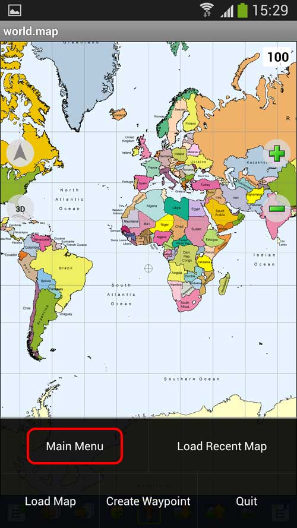
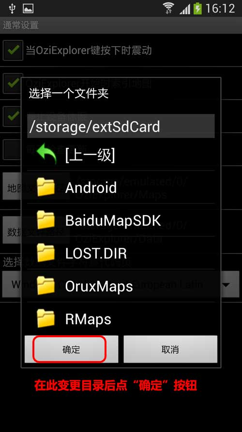

|
| 首页 | GeoTIFF | 今日花园Maps | OruxMaps | OZI | 资源 | 软件 | 联系 |
| 当前位置：OZI ---> 在安卓手机上安装和使用OziExplorer软件 |
在安卓手机上安装和使用OziExplorer软件注意：安卓系统OziExplorer只能调用英文名称的地图（.ozf2文件），如果地图的名称是中文的必须修改成英文的（.map文件里面的地图名称也要修改）。一、软件的安装 把下载的Ozi_for_Android1.15.apk文件复制到手机上，然后在手机上点击此文件进行安装。 二、软件的汉化 安装完成后运行程序，软件的界面是英文的，按如下步骤进行汉化： |

|
通过以上步骤后，重新启动软件，软件界面就已经汉化了。 三、地图存放的位置 默认的地图存放位置是安装目录下的Maps文件夹，你也可以把地图存放位置改变到其它地方，按如下步骤进行： |


|
四、航点、路径、轨迹等数据文件存放的位置 默认的航点、路径、轨迹等数据文件存放位置是安装目录下的Data文件夹，你也可以把存放位置改变到其它地方，按如下步骤进行： |
|
五、正常显示汉字的设置 默认情况下，航点、路径、轨迹等只能显示英文字符，显示汉字时会出现乱码，要正常显示汉字，按如下步骤进行： |
|
六、地图的调用 默认情况下，在软件开启了GPS定位功能后，软件会自动调用地图，当然你也可以手动调用地图，方法如下： |
|
七、地图的移动浏览 在软件开启了GPS定位功能后，软件会锁定地图，不能移动地图，如果你想移动地图进行浏览，可以关闭GPS定位功能，方法如下： |
| www.todaygarden.net |
版权所有 2010-2020 今日花园 |